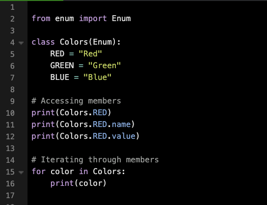

An Enum (short for enumeration) in Python is a class used to define a collection of named, immutable constants. Enums enhance code clarity and maintainability by replacing arbitrary numbers or strings with descriptive names.
The enum module offers the Enum class to create enumerations. Additionally, it contains:
Enums also provide methods like:
In this example, an enumeration called Colors is defined with three color names (RED, GREEN, BLUE). The script accesses and prints the name and value of RED and then iterates over the members of the Colors enumeration.
Output: Colors.RED
Output: RED
Output: red
Output: Colors.RED
Output: Colors.GREEN
Output: Colors.BLUE